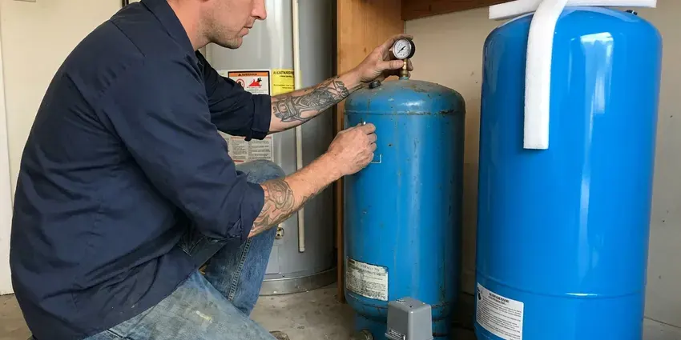

Water Line Replacement in Manhattan, KS
Dealing with a major leak or disruption with your home's water supply in Manhattan, KS? Our team at KRV Plumbing focuses on complete water line replacement solutions.
- Quick Water Line Service
- Honest Pricing
- Trenchless Pull Options
- PEX and Type K Copper

Strong Pressure and a Leak-Free Yard Start in Manhattan, KS.
Our team is ready to provide efficient and dependable water line replacement services tailored to your home's needs.
Water Line Replacement in Manhattan, KS From Meter to Foundation
At KRV Plumbing, we specialize in diagnosing and replacing compromised main water lines in Manhattan, KS. Our experienced plumbers use advanced techniques and high-quality materials to ensure your new water line is robust and code-compliant.
Our expertise includes:
- Long-Lasting Copper and PEX Solutions
- Galvanized and polybutylene main line replacement with PEX or copper
- Main water line excavation and replacement

Additional Plumbing Replacement Services in Manhattan, KS
When repairs are no longer enough, our replacement services in Manhattan, KS deliver durable upgrades that restore full performance.


Customers
Why Choose KRV Plumbing for Water Line Replacement in Manhattan, KS?
A lot of Kansas housing dates from the mid-century building boom, with galvanized supply lines and cast iron drains. Many older homes still have galvanized steel service lines that corrode from the inside, restricting pressure and eventually leaking. Rocky soil and shifting ground add stress to buried pipe.
- Advanced Techniques, Our team is skilled in both traditional trenching and less invasive trenchless replacement methods, minimizing disruption.
- Customer Focus, We provide clear communication and transparent pricing from start to finish on every water line project.
- Yard Restoration, We backfill, compact and restore the trench area when the job is finished.
Citywide Coverage
No matter where your property is located within Manhattan, KRV Plumbing offers comprehensive water line replacement services. We're familiar with the varied housing stock, from older homes with aging infrastructure to newer constructions requiring robust main lines.
Experienced Team
Our team uses leak detection equipment and trenchless tools every week. That experience helps us choose the best method for each property.
Safety-First Approach
From proper excavation and shoring to careful pipe installation and pressure testing, KRV Plumbing prioritizes safety and code compliance. We secure all necessary permits for water line replacement in Manhattan, giving you confidence in a legally sound and safe installation.
Trusted Certified Manhattan Plumbing Services Professionals
At KRV Plumbing, we take pride in providing certified plumbing services throughout Manhattan, KS. Backed by leading industry credentials, our experienced plumbers combine technical skill with genuine customer care. Whether it is repair, installation, or maintenance, we follow strict safety and quality standards to deliver long-lasting results you can trust.
Call Us Now PHCC Plumbing Contractor Recognition
PHCC Plumbing Contractor Recognition Better Business Bureau (BBB) Accreditation
Better Business Bureau (BBB) Accreditation Angi Certified Pro
Angi Certified Pro ISO 9001 Quality Management Certification
ISO 9001 Quality Management CertificationReliable Water Line Replacement Services in Manhattan, KS
Water Line Materials and Brands in Manhattan, KS
We work with a range of high-quality materials and well-known brands for water line replacement across Manhattan, KS. This includes durable copper tubing from manufacturers like Mueller Industries, flexible PEX piping from leading brands such as Uponor and Viega, and high-grade PVC for specific applications where appropriate. Our selection ensures your new water line is made to last, providing reliable water flow and meeting all local standards for potable water delivery.

Damage Assessment and Replacement in Manhattan
Diagnosing the exact cause and extent of water line damage is essential before replacement. Our technicians use modern leak detection equipment and camera inspections to pinpoint issues like tree root intrusion, pipe corrosion, or ground shifting. For properties in Manhattan, especially those with older foundations or heavy tree growth, accurate assessment ensures we recommend the most fitting and effective replacement strategy.
Galvanized Main Line Replacement in Manhattan
Galvanized steel pipe was common in homes built before the 1970s. Over time, it corrodes inside and chokes the pipe. This causes low pressure and discolored water. We replace galvanized lines with modern PEX or copper. The difference in water pressure is often immediate.
Emergency Water Line Repair and Replacement in Manhattan, KS
A major water line break can flood your yard or leave you without water. Call (316) 229-8459 for emergency service. We locate the break and make temporary repairs if needed. Then we plan a permanent replacement. Fast response limits damage.
Emergency Water Line Replacement in Manhattan
A burst or severely leaking main water line is an emergency, requiring immediate attention to prevent extensive property damage. KRV Plumbing offers emergency water line replacement services to rapidly diagnose and resolve critical failures. Our plumbers are equipped to respond fast in Manhattan, shut off water, and begin the replacement process to restore your home's essential water supply as soon as possible.
Copper Service Line Installation in Manhattan, KS
Type K copper is a durable option for underground water lines. It resists punctures and lasts for decades. Copper costs more than PEX but is preferred by some homeowners. We install copper with proper bedding to cushion it. We can also install sleeves where it passes through foundations.
PEX Water Line Installation in Manhattan, KS
PEX (cross-linked polyethylene) piping is a modern, flexible, and very popular choice for water line replacement. It resists corrosion, scaling, and chlorine, making it very durable for most water conditions. Hard freezes happen every winter in Kansas, and pipes in exterior walls, garages, and crawlspaces are the first to burst. PEX can expand and contract without bursting, which is a significant advantage when a cold snap hits Manhattan. Its flexibility allows for fewer fittings and faster installation.

PEX Water Line Replacement in Manhattan
PEX (cross-linked polyethylene) is a popular and budget-friendly choice for water line replacement in Manhattan. It's flexible, resistant to freezing, and less prone to scaling and corrosion than some traditional materials. Its flexibility allows for easier installation, often requiring fewer connections, which reduces the potential for leaks. PEX is also a good option for homes with corrosive soil conditions, offering a reliable alternative to metal pipes.
Water Line Replacement Near Me in Manhattan, KS
Our commitment to Manhattan extends to providing convenient and reliable plumbing solutions. We pride ourselves on being the go-to plumbing company for residents facing main water line problems, delivering professional service that's always just a phone call away. Count on KRV Plumbing to be your local partner for all water line replacement needs.
KRV Plumbing is your reliable local expert for water line replacement throughout Manhattan and its surrounding communities. Our teams are always close by, ready to deliver efficient, high-quality plumbing solutions right to your doorstep, minimizing your wait time and inconvenience.
KRV Plumbing at a Glance
- Fully licensed plumbing team covering Manhattan, KS
- 24/7 emergency service with same-day scheduling
- Clear written estimates, no hidden fees
- 4.9-star rated by 910+ Kansas customers
Manhattan Map
Manhattan Information
- Population
- 53,682
- Area codes
- 785/913/620
- Service area
- Manhattan and communities within 40 miles
- Nearby
- Junction City, Topeka, Emporia, Salina
Ground movement puts constant stress on buried pipe, so durable and properly installed water lines are crucial for homes in Manhattan, KS to prevent leaks and costly damage.
Expert Services
Trust our professionals for reliable KRV Plumbing solutions in Manhattan, KS.
Our Specialized Plumbing Services in Manhattan, KS
At KRV Plumbing, we provide a complete range of plumbing services across Manhattan, KS. From leak detection to full system installations, our team ensures fast, precise, and affordable service for both residential and commercial properties. Explore our core services below:


How Our Water Line Replacement Service Works in Manhattan, KS
Our water line replacement process is designed for speed and transparency, ensuring you understand every step we take to restore your water service.
Request a Quote
Contact KRV Plumbing at (316) 229-8459 to schedule an inspection. Our team will assess your current water line issues and provide a detailed, transparent estimate for replacement.
Site Assessment
We perform a thorough evaluation of your property, pinpointing the exact location of the damaged line and determining the best replacement method, considering your landscape and budget.
Permit & Preparation
Once a plan is approved, we handle all necessary permits with Manhattan authorities. We also mark utility lines and prepare the site for careful and efficient excavation or trenchless work.
Frequently Asked Questions About Water Line Replacement in Manhattan
The cost of water line replacement in Manhattan can vary widely based on factors like pipe material (copper vs. PEX), length of the line, depth, and whether trenchless methods are used. Typically, homeowners can expect to pay anywhere from $3,000 to $15,000 or more for a complete main water line replacement. We provide a detailed, upfront estimate after an on-site inspection.
KRV Plumbing mainly uses high-quality copper and PEX (cross-linked polyethylene) for water line replacements. Copper is known for its durability and longevity, while PEX offers flexibility, corrosion resistance, and freeze resistance, making both strong choices for homes in Kansas.
Homeowners are typically responsible for the line from the meter to the house. The utility maintains the line on the street side.
It requires trenching, proper materials and code knowledge. Mistakes can cause leaks or damage utilities.
Common signs include a sudden drop in water pressure, discolored or rusty water coming from your taps, unusually wet spots in your yard that aren't explained by rain, and a significant increase in your water bill. If you notice any of these, especially combined with the age of your home, it's wise to have your water line inspected.
A newly installed water line using quality materials like copper or PEX can last 50 to 100 years or even longer. Copper is known for its exceptional longevity, while PEX typically has a manufacturer's warranty of 25 years but can last much longer. Regular maintenance and stable ground conditions contribute to a longer lifespan.
Key indicators include a sudden, unexplained drop in water pressure throughout your home, discolored water (rust or dirt particles), consistently wet spots in your yard that aren't explained by rain, or a suddenly high water bill with no change in usage. Multiple leaks or very old, corroded pipes also point to replacement.
Yes, a permit is typically required for main water line replacement projects in Manhattan. This ensures the work complies with local building and plumbing codes. KRV Plumbing handles all necessary permitting and inspections, ensuring your new water line installation is fully compliant.
What People Are Saying About Our Plumbing Experts?

Patricia H.
We had a slab leak that two other companies could not find. KRV Plumbing located it in under an hour, explained our options, and the price matched the quote to the dollar.
Slab Leak Repair · Salina, KS
Daniel K.
A pipe burst at 11 pm and they actually answered. The plumber showed up within the hour, shut everything down, and had us back to normal the next morning. Could not ask for more.
Emergency Plumbing · Junction City, KS
James P.
Our commercial plumbing system had a leak under the sink, and KRV Plumbing handled it professionally. The plumbers arrived quickly and restored everything without disruption to our customers.
Commercial Plumbing · Emporia, KS
Mark T.
When our office needed drain cleaning, KRV Plumbing provided quick, reliable service. The plumber arrived on time and made sure every drain flowed perfectly before leaving. Very satisfied.
Drain Cleaning · Salina, KS
Laura S.
I scheduled a water heater replacement, and the team made the process smooth and affordable. The new unit works perfectly, and they cleaned up after completing the job.
Water Heater Replacement · Junction City, KSSofia M.
Two new toilets installed in one visit, no mess left behind, and the tech even adjusted a faucet he noticed was dripping. Fair pricing and really friendly.
Toilet Installation · Lawrence, KS